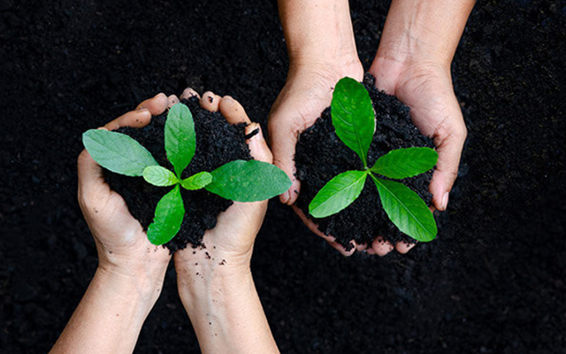
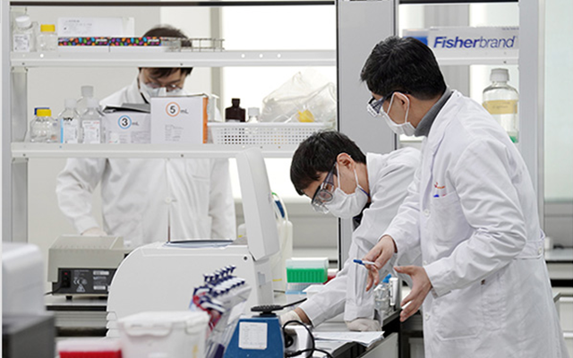
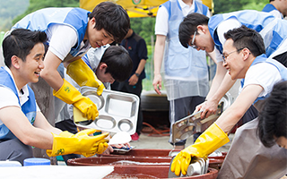
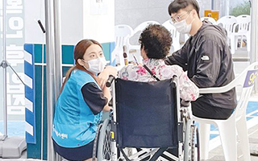
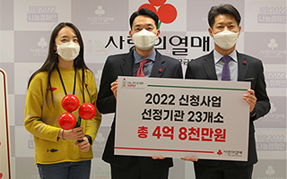
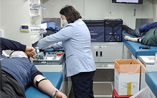

경영정보 Management
기업윤리와 깨끗한 조직문화를 바탕으로 성실히 준수하고 실천합니다
-
환경나눔
기업의 사회적 책임과 범지구적인 환경문제에 대한 중요성과 가치를 지역사회와 함께 나누기 위하여 자연생태계 보존활동을 실천해 나가고 있습니다. 주성엔지니어링은 깨끗하고 쾌적한 주변환경을만들기 위해 환경정화 활동을 펼쳐오고 있습니다. 회사주변의 경안천과 인근도로, 주변 못산지, 숲, 공원까지 범위를 확대해 나가면서 꾸준한 환경정화 활동을 진행하고 있으며 필수교육과정으로 지정하여 체계적인 환경나눔 프로그램을 운영 중에 있습니다.
-
산학협력
주성엔지니어링은 기업과 대학간의 산학협력관계를 체결하고, 관내/외 주요대학에 연구지원, 연구장려금 및 기자재 지원, 공동 연구개발 및 기술자문 등을 통하여 국가와 사회의 교육 및 산업 발전에 일익을 담당하고 있습니다.
산학협력관계가 포함된 학교 : 영남대학교 , KAIST , 고려대학교 , 경원대학교 , 인제대학교 , 한국기술교육대학교 -
일운과학기술재단
우수한 인재 양성과 연구 개발 활동 활성화에 미력한 힘이나마 보탬이 될 수 있도록 장학재단법인 일운과학기술재단을설립하게 되었습니다.우리 사회 발전에 밑거름이 될 수 있는 연구개발 활성화를 위해 우수한학생을 엄정하게 선별하여우수한 인재가 꿈을 이룰 수 있도록 일운과학기술재단이 지원하겠습니다.
나눔활동
-

- 지역사회봉사
- 아동 및 청소년 보호시설(123 Family) 봉사활동, 사랑의 김장나눔행사, 나홀로 어르신 HAPPY BOX 지원 활동 등 다양한 지역 사회 봉사를 진행하고 있습니다.
-

- 불우이웃돕기
- 임직원들의 자발적인 성금과 회사 후원금을 합하여 지역의 독거노인, 소년소녀가장 등 지역사회의 어려운 이웃들에게 생활 필수품을 지원하고 있습니다.
-

- 기부 활동 동참
- 더불어 성장하는 사회를 위해 임직원 모두가 급여 끝전을 모금하여 매년 지역 사회 돌봄을 위해 필요한 곳에 기부하는 활동을 하고 있습니다.
-

- 직원 헌혈 캠페인 동참
- 임직원이 뜻을 모아 매년 헌혈 캠페인에 동참하고 있습니다.